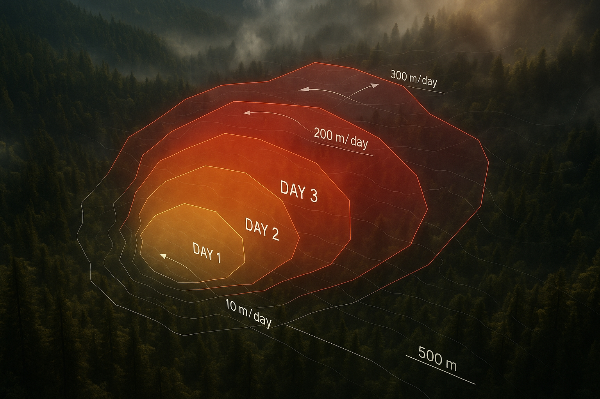
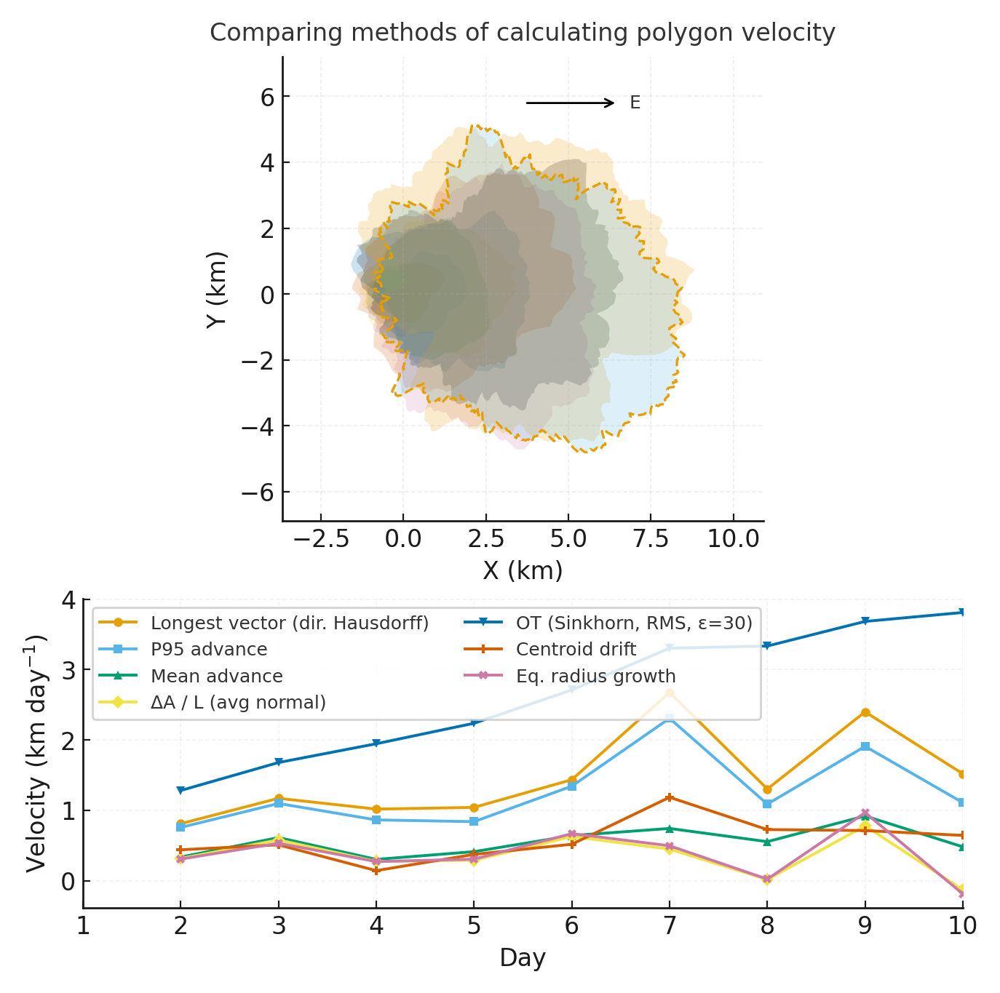
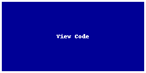

Project Title
 Raw photo location: hero.jpg
{kind=link}
One sentence on impact: In 3 days, we explore X to inform Y, producing actionable visuals, a concise brief, and shareable code.
Project brief (PDF) · View shared code · Data & access
About this site: This is a public, in-progress record of a 3-day project at the Innovation Summit. Edit everything here in your browser: open a file → pencil icon → Commit changes.
How to use this page (for the team)
- Edit this file:
docs/index.md→ ✎ → change text → Commit changes. - Add images: upload to
docs/assets/and reference likeassets/your_file.png. - Keep text short and visuals first. Think “slide captions,” not essays.
Day 1 — Define & Explore
Focus: questions, hypotheses, context; add at least one visual (photo of whiteboard/notes).
Our product 📣
- What product do you want to create as a team?
Our question(s) 📣
- What are we trying to understand or change?
- Why now? Why here?
- Who benefits if we succeed?
Hypotheses / intentions [Optional: probably not relevant if you are creating an educational tool]
- We think that …
- We intend to test whether …
- We will know we’re onto something if …
Why this matters (the “upshot”) 📣
Explain who is impacted and how this could change decisions or understanding.
Inspirations (papers, datasets, tools)
- Publication: Influential paper title
- Dataset portal: Example data hub
- Tool/tech: Method or library
Field notes / visuals
 Raw photo location: day1_whiteboard.jpg
Caption: What this shows and why it’s useful today.
Raw photo location: day1_whiteboard.jpg
Caption: What this shows and why it’s useful today.
{kind=link}
Different perspectives: Briefly capture disagreements or alternate framings. These can unlock innovation.
Day 2 — Data & Methods
Focus: what we’re testing and building; show a first visual (plot/map/screenshot/GIF).
Data sources we’re exploring 📣
- Source A
 Raw photo location: explore_data_plot.png
Snapshot showing initial data patterns.
Raw photo location: explore_data_plot.png
Snapshot showing initial data patterns.
{kind=link}
- Source B — link and 1-line description
Methods / technologies we’re testing 📣
- Approach 1 (e.g., time-series break detection)
- Approach 2 (e.g., random forest on features)
- Visualization (e.g., map tiles, small multiples)
Challenges identified
- Data gaps / quality issues
- Method limitations / compute constraints
- Open questions we need to decide on
Visuals
Static figure
 Raw photo location: figure1.png Figure 1. One line on what this suggests.
{kind=link}
Animated change (GIF)
 Raw photo location: change.gif
Figure 2. One line on what changes across time.
Raw photo location: change.gif
Figure 2. One line on what changes across time.
{kind=link}
Interactive map (iframe)
If an embed doesn’t load, put the normal link directly under it.
Final Share Out — Insights & Sharing
Focus: synthesis; highlight 2–3 visuals that tell the story; keep text crisp. Practice a 2-minute walkthrough of the homepage 📣: Why → Questions → Data/Methods → Findings → Next.
 Raw photo location: team_photo.jpg
Raw photo location: team_photo.jpg
{kind=link}
Findings at a glance 📣
- Headline 1 — what, where, how much
- Headline 2 — change/trend/contrast
- Headline 3 — implication for practice or policy
Visuals that tell the story 📣
 Raw photo location: fire_hull.png
Visual 1. Swap in the primary graphic that clearly communicates your core takeaway.
Raw photo location: fire_hull.png
Visual 1. Swap in the primary graphic that clearly communicates your core takeaway.
{kind=link}
 Raw photo location: hull_panels.png
Visual 2. Use a complementary panel, collage, or set of snapshots that reinforces supporting evidence.
Raw photo location: hull_panels.png
Visual 2. Use a complementary panel, collage, or set of snapshots that reinforces supporting evidence.
{kind=link}
 Raw photo location: main_result.png
Visual 3. Highlight an additional visual that captures a secondary insight or next step.
Raw photo location: main_result.png
Visual 3. Highlight an additional visual that captures a secondary insight or next step.
{kind=link}
What’s next? 📣
- Immediate follow-ups
- What we would do with one more week/month
- Who should see this next
Featured links (image buttons)
 Read the brief |
 View code |
 Explore data |
Team
| Name | Role | Contact | GitHub |
|---|---|---|---|
| Jane Doe | Lead | jane.doe@example.org | @janedoe |
| John Smith | Analyst | john.smith@example.org | @jsmith |
Storage
Code
Keep shared scripts, notebooks, and utilities in the code/ directory. Document how to run them in a README or within the files so teammates and visitors can reproduce your workflow.
Documentation
Use the docs/ folder to publish project updates on this site. Longer internal notes can live in documentation/; summarize key takeaways here so the public story stays current.
Cite & reuse
If you use these materials, please cite:
Lastname, A., Lastname, B. (2025). Project title. DOI or URL.
License: CC-BY-4.0 unless noted. See dataset licenses on the Data page.